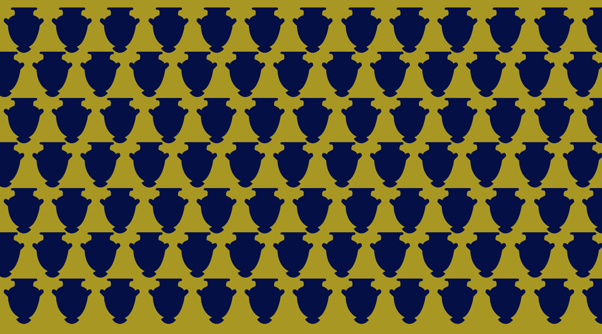
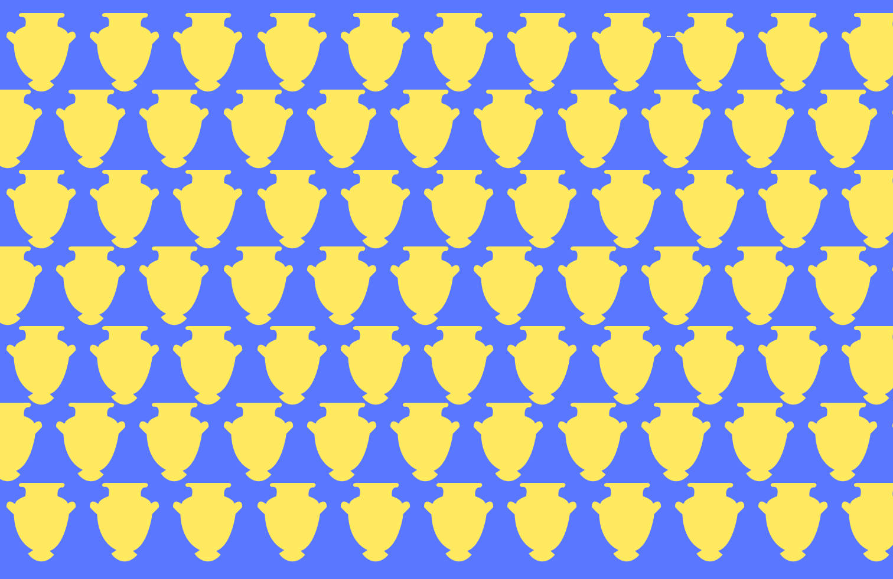

<!doctype html>
<html lang="en">
  <head>
    <meta charset="UTF-8" />
    <meta name="viewport" content="width=device-width, initial-scale=1.0" />
    <meta name="author" content="Shakila" />
    <meta name="color-scheme" content="dark light" />

    <title>MANO SODAS / klépos</title>
    <link rel="stylesheet" href="/assets/style/normal.css" />

    <!-- Importeer het webring component, voeg jouw eigen domein toe in data-page -->
    <!-- <script
      data-page="[https://manosodas.nl]"
      src="https://digitaaltuintje.nl/webring.js"
      defer
    ></script> -->
    <!-- Importeer het webring component, voeg jouw eigen domein toe in data-page -->
    <!-- <script
      data-page="[https://voorbeeld.nl]"
      src="https://digitaaltuintje.nl/webring.js"
      defer
    ></script> -->
  </head>
  <body background="img/light.png"></body>
  <body>

     <!-- <picture>
      <source
        srcset="images/iphone-dark.jpg"
        media="(prefers-color-scheme: light)"
      />
      
    </picture>
    <picture>
      <source
        srcset="images/iphone-dark.jpg"
        media="(prefers-color-scheme: dark)"
      />
      
    </picture> -->

	<!-- <picture>
		  <source srcset="img/dark.png" media="(width > 30em) and (prefers-color-scheme: dark)" />
			<source srcset="img/hardlopen-licht.jpg" media="(width > 30em)" />
		  
		</picture> -->

    	<picture>
  <source srcset="img/dark.png" media="(prefers-color-scheme: dark)" />
  
</picture>


      <header>
        <!-- <h1>Mano Sodas</h1>
      <h3>Klépos</h3> -->

        <form>
          <label for="system-mode">
            <input
              type="radio"
              id="system-mode"
              name="color-theme"
              value="auto"
              checked
            />
            Auto
          </label>
          <label for="light-mode">
            <input
              type="radio"
              id="light-mode"
              name="color-theme"
              value="light"
            />
            Licht
          </label>
          <label for="dark-mode">
            <input
              type="radio"
              id="dark-mode"
              name="color-theme"
              value="dark"
            />
            Donker
          </label>
        </form>
      </header>

      <header>
        <nav class="gods">
          <ul class="links">
            <li><a href="index.html" class="active"> Home</a></li>
            <li><a href="./Athena/index.html"> Athena</a></li>
            <!-- <li><a href="ojo.html"> Placeholder</a></li> -->
          </ul>
        </nav>
      </header>

      <main>
        <h1>hier komt home page</h1>
      </main>
      <footer>
        <p>[Copyleft 2026, all wrongs reversed]</p>
      </footer>
    </body>
  </body>
</html>
